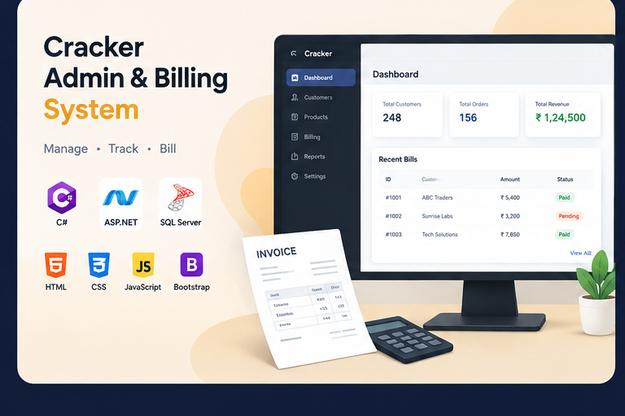

Cracker Admin & Billing System
An internal administrative and billing application focused on managing business operations, records and billing workflows.

An internal administrative and billing application focused on managing business operations, records and billing workflows.

The Cracker Admin & Billing System is an internal application built to manage business operations, records and billing workflows.
Business operations and billing records need a reliable, database-driven system for entering, tracking and reporting on transactions.
Built with ASP.NET, C# and SQL Server, with HTML, CSS, JavaScript and Bootstrap handling the front-end presentation and interactions.
Keeping billing and record-management workflows accurate and organized within a growing internal application.
Key outcome: Improved understanding of building practical, database-driven business and billing applications.